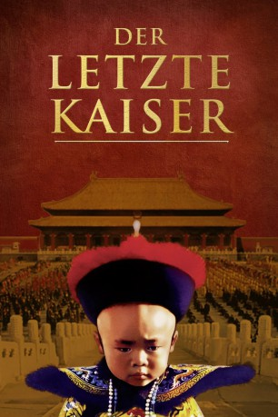
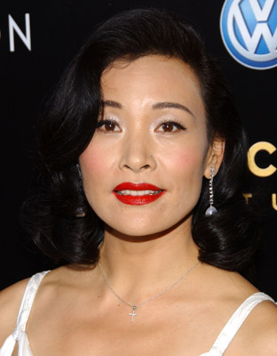
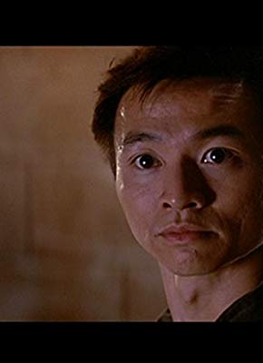

#4460 Der Letzte Kaiser 
Auszeichnungen: 13 Oscars gewonnen 4 GoldenGlobes gewonnen 3 BAFTA-Awards gewonnen
 
 IMDB-Wertung: 7.8 / 10
IMDB-Wertung: 7.8 / 10  Metascore: 0
Metascore: 0 
Monumentalfilm über das Leben des letzten Kaisers der chinesischen Qin-Dynastie. Bertolucci zeichnet das Leben von Pu-Yi nach, der mit nur zwei Jahren zum letzten chinesischen Kaiser gekrönt, mit fünf Jahren entmachtet und später verstoßen wurde. Der Film wurde 1987 mit insgesamt neun Oscars ausgezeichnet.
Jahr: 1987
Dauer: 161 Minuten
FSK: 12
Land: China Studio: Jugendfilm-VerleihTonspuren: DD5.1 - ,
Untertitel:
Auflösung: 1080p (1920x808) Größe: 18432 MB
Genre: Biographie, Drama, Geschichte
Regisseur:  Bernardo Bertolucci
Bernardo Bertolucci
Drehbuch: Chao-Bin Su
Soundtrack:
Darsteller:
 John Lone als Pu Yi - Adult
John Lone als Pu Yi - Adult-  Joan Chen als Wan Jung
 Peter O'Toole als Reginald 'R. J.' Johnston
Peter O'Toole als Reginald 'R. J.' Johnston Victor Wong als Chen Pao Shen
Victor Wong als Chen Pao Shen- Ryuichi Sakamoto als Amakasu
 Ric Young als Interrogator
Ric Young als Interrogator Vivian Wu als Wen Hsiu
Vivian Wu als Wen Hsiu Cary-Hiroyuki Tagawa als Chang
Cary-Hiroyuki Tagawa als Chang- Richard Vuu als Pu Yi - 3 Years
 Lisa Lu als Tzu Hsui
Lisa Lu als Tzu Hsui- Kaige Chen als Captain of Imperial Guard
 Constantine Gregory als Oculist
Constantine Gregory als Oculist- Shi Liang als Republican Officer
- Daxing Zhang als Tough Warder
- Glen Murphy als Captain , uncredited
- Ruocheng Ying als The Governor
-  Dennis Dun als Big Li
- Maggie Han als Eastern Jewel
- Jade Go als Ar Mo
- Fumihiko Ikeda als Yoshioka
- Tsou Tijger als Pu Yi - 8 Years
- Tao Wu als Pu Yi - 15 Years
- Guang Fan als Pu Chieh - Adult
- Henry Kyi als Pu Chieh - 7 Years
- Alvin Riley III als Pu Chieh - 14 Years
- Hideo Takamatsu als General Ishikari
- Hajime Tachibana als Japanese Translator
- Basil Pao als Prince Chun
- Henry O als Lord Chamberlain
- Liangbin Zhang als Big Foot
- Wenjie Huang als Hunchback
- Dong Liang als Lady Aisin-Gioro
- Zhendong Dong als Old Doctor
- Jiechen Dong als Doctor
- Huaikuei Soong als Lung Yu
- Ruzhen Shao als First High Consort
- Li Yu als Second High Consort
- Guangli Li als Third High Consort
- Chunqing Xu als Grey Eyes
- Tianmin Zhang als Old Tutor
- Hongnian Luo als Sleeping Old Tutor
- Shihong Yu als Hsiao Hsiu
- Jun Wu als Wen Hsiu - 12 Years
- Lucia Hwong als Lady of the Book
- Jingping Cui als Lady of the Pen
- Junguo Gu als Tang
- Xu Tongrui als Captain of Feng's Army
- Fusheng Li als Minister of Trade
- Shu Chen als Chang Chinghui
- Shuyan Cheng als Lady Hiro Saga
Datei: X:\HD-Eastern-Classic(A-M)\Letzte Kaiser, Der (1987, FSK12, 1920x808) 3D.mkv seit 22.09.2016
Festplatte: HD Eastern+Western
 Es gibt insgesamt 63 Filme in der Gruppe 'HD-Eastern-Classic(A-M)'
Es gibt insgesamt 63 Filme in der Gruppe 'HD-Eastern-Classic(A-M)'